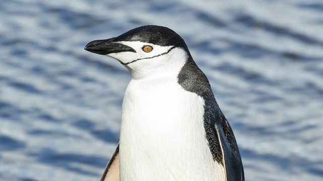

物理5–11 岁约 10 分钟
刺够卡住好几条，刺少只剩一条？
同一张嘴。刺够才能卡住好几条；刺少就只剩一条。差在刺够不够，不在换一张更大的嘴。本页不掏园里的嘴，观察后洗手。
同一张纸嘴，刺够一回，刺少一回

刺够卡住好几条。刺少只剩一条。先点「刺够」，再点「刺少」。
先猜一猜，再试
第 1 题：刺 80，刺够，能叼好几条吗？
押一个。把刺调到 80，再点试一试。
第 2 题：刺 10，刺少，还卡得住好几条吗？
押好后刺 10，再试一试。
第 3 题：刺 50，刚好够刺，算能叼好几条吗？
押好后刺 50，再试一试。
同一张嘴：刺够卡住好几条；刺少只剩一条
先点「刺够」再点「试一试」，看好几条小鱼并排卡住。再点「刺少」试一次，看是不是鱼往下掉、只剩一条。
纸嘴始终是同一张。差在刺够不够，不在换一张更大的嘴——那是人编的账。也不在换成企鹅那种翅当桨。刺够才卡住好几条，刺少就只剩一条。
舞台上的「卡住」是本页比较尺子：刺 ≥ 50 才算刺够。刚好 50 也算能叼好几条。不掏园里的嘴，不伸手数真鸟嘴里的鱼，观察后洗手。本页用纸板和砂纸刺。
叼鱼图鉴
点一张，对照舞台：谁让刺够卡住好几条，谁让刺少只剩一条。
点一张图鉴，对照为什么刺够才卡住好几条。
猜一猜
同一张纸嘴要卡住好几条小鱼，靠的是刺够，还是换一张更大的嘴？
先押一个，再点「看答案」。
任务：刺够和刺少都试
先把刺调到 80 或更高试一次，再调到 20 或更低试一次。两头都试过即可完成。
开放式提示不会代替上面的正式任务。
尚未完成：先刺够试一次，或刺少试一次。
同一张嘴，先刺够试一次，再刺少试一次
舞台上只改一件事：刺有多少。同一张纸嘴、同一堆小鱼，先刺够试一次，看好几条卡不卡得住；再刺少试一次，看是不是只剩一条。这样比，才知道叼好几条靠的是刺，不是「换一张更大的嘴」，也不是「换成企鹅那种翅当桨」。
回家只带两句：「刺够才卡住好几条」；「刺少只剩一条」。不要写成「嘴越大叼得越多」。
刺够，台上好几条才并排卡住，不是谁嘴更大。
刺少以后台上只剩一条，其余滑掉。
海鹦页比的是刺不是嘴更大；本页比刺够不够，两句不要并成一句。
不掏嘴、不靠近窝，本页用纸板和砂纸刺对照。
这在教什么：孩子要能对刺够和刺少各报好几条或一条，并否定「换一张更大的嘴」和「它是会飞的企鹅」。
- 刺够那一次，好几条卡住了吗？
- 刺少，台上还挂得住好几条吗？
- 本页要比换一张更大的嘴吗？
- 能去掏园里的嘴、伸手数它嘴里的鱼吗？
叼好几条靠刺，不是更大的嘴，更不要去掏真嘴
往后的刺把鱼顶住，舌头再压上去，好几条才并排挂着。刺只在够密时，这一卡才成立。刺少，眼前就剩一条。
不要把它讲成「嘴越大叼得越多」或「换成企鹅就能飞着叼」。海鹦页比的是真鸟嘴里的刺，零件对得上。企鹅页比的是翅当桨，不是这一页。
不掏活鸟，不伸手数嘴里的鱼，不靠近窝。看完按二十秒洗手。本页用纸板和砂纸刺。
给家长的问题
- 刺够那一次，孩子指的是嘴里的刺和并排的鱼，还是在说「它比较厉害」？让他再指一次刺和鱼。
- 刺少，为什么只剩一条？哪一句四岁听得懂？
- 如果他说「换一张更大的嘴就能多叼」——那是把哪一步抹掉了？本页少的是刺还是嘴？
- 翠鸟一次一条和海鹦一次好几条，差在刺还是嘴尖？
- 不掏活嘴、不靠近窝、看完洗手：红线怎么说？本页能当掏嘴游戏吗？
背后的原理
舞台上不写这些词，留给孩子用眼睛看。向后的角质小齿增加摩擦，舌头把已捕获的鱼压在上腭上，喙仍可略张再夹。本页用刺 ≥ 50 当门槛，刚好也算能叼好几条。
这不是把口腔容积加大，也不是企鹅的鳍状桨。海鹦页比真刺，企鹅页比翅桨，都不要并进本页第一完成句。
人的手指去掏活海鹦有夹伤风险。观察后洗手。舞台用纸板。
接下来可以去
带走句：刺够才卡住好几条；刺少只剩一条。海鹦观察站看真嘴里的刺；企鹅页看翅当桨；翠鸟页看一次一条。